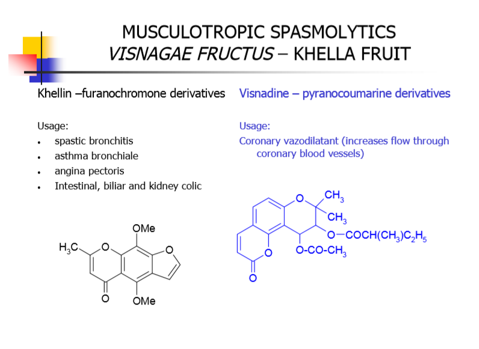

Ephedrine, methylxanthines - theophylline, caffeine; spasmolytics atropine, scopolamine, khelline
EPHEDRINE:
→ protoalkaloid (do not have the nitrogen as part of heterocyclic ring system)
→ species of Ephedra (source of ephedrine and pseudoephedrine,which also can prepared by synthesis)
→ chin Ephedra sinica, equisteina, Ephedraceae
→ indian and pakistani Ephedra gerardiana,intermedia,major ,Ephedraceae
→ collected on autumn (↑ amount of alkaloids,
→ stems bear numerus fine,longitudeinal rings, leaves are small,connate at the base,
→ contain about .5 to 2% of alkaloids (ephedra and isomers form about 30 to 90%
→ benzoic acid combines with intact CH3CO group of pyruvic acid → ephedrine
→ Water, ethanol, ether, chloroform, oils
→ relief of asthma and hay fever
→ more prolonged action than adrenaline.
Methyxanthines-Theophylline,Caffeine
→ Purine alkaloids’ constitute secondary metabolites and are derivatives of xanthine; three well-known examples are
- caffeine (1,3,7-trimethylxanthine),
- theophylline (1,3-dimethylaxanthine)
- theobromine (3,7-dimethylxanthine).
⇒ drugs containing methyderivatives of xanthine
- Coffeae semen
- Thea folium
- colae semen
- Cacao semen
- Mate follium
- Guarana
Coffae semen- Coffea seeds
SOURCE → Coffea arabica,liberica,canephora, Rubiaceae
- evergreen shurbs or small trees
- egg shaped double-capsuled drupe
CC: → 0.4-2.5 % caffeine,traces of theobromine and theophylline,
Thea folium - Tea leaves
SOURCE: → Thea sinesis Theaceae
- perennial,up to 2m tall shrub
→ harvest of terminal leaves (3yrs old+)
- younger leaves are prefferred for quality of essential oils and caffeine
→ 10-25% catehine tannis + essential oils
Cacao semen -cocoa beans
SOURCE : → Theobroma cacao Stercuiliaceae
- tree native to Middle and South America
- fruit capsules contain 25-30 seeds in five lines
- seeds are sun-fermentated,formation of fragrant compounds and dark pigmentation
- roasting at 100-140oC which give typical odor and smell
→ fat,tannins,starch
Mate Folium - Mate leaves
SOURCE : → Iliex paraguariensis Aquifoliaceae
- tree native in South America (main Argetina)
- bright-green skinny glossy leaves
→ cholinergic acid,essential oils,flavonoids
Guarana - pasta guarana
SOURCE: → Pullinia cupana- guarana, Sapindaceae
- climbing wine from Brazilian and Venezuelan rain forest
- fruit is capsule // seeds dried and roasted
spasmolytics atropine, scopolamine, khelline
⇒ Neurotropic spasmolytics ⇒ Musculotropic myotropic
- anticholinergic — myotropic
- atropine type(atropine,scopolamine) — papaverine type ( papaverine,khelline)
⇒ Tropane alkaloids
Belladonnae folium -deadly nightshade leaves
SOURCE: → Atropa belladona Solanaceae
- perennial 1.5 tall herb
- Europe,
CC: → 0.2-1% tropane alkaloids
→ scopolamine
→ apoatropin → atropine → belladonine
Stramoni folium- thorn apple leaves
SOURCE: → Dature stramonium Solanaceae
- 1 year herb,weed, big fruits
CC: → 0.1-0.6% tropane alkaloids
→ scopolamine
→ less apoatropine,belladonine,CaOx
Hyosciamine folium- henbane leaves
SOURCE: → Hyosciamus niger Solanaceae
- biennial herb from rubbles,1yr
CC: → 0,03-0.15% tropane → hyosciamine → scopolamine
SOURCE: → Hyosciamus muticus Solanacea → cultivated on Egypy
Visnagae fructus - khella fruit
SOURCE: → Ammi visnaga Apiaceae
- toothpickweed,khella,1yr,80cm tall herb
- Mediterranian
CC: → Furanochromoes (1.5-3%)
⇒ Dehydration
- Dehydration of alkaloids give rise to either anhydro- or apo- alkaloids, such as:
— Apoatropine obtained from Atropine
⇒ Hydrolysis
→ A good number of naturally occurring alkaloids are obtained as esters. They easily undergo hydrolysis on being heated with either alkalies or mineral acids thereby resulting into the formation of the corresponding acids along with respective alcohols or phenols of the alkaloids. A few typical examples are as give below:
(i) ATROPINE + H2O æÆ TROPINE + TROPIC ACID

{kind=link}
{kind=link}
{kind=link}
{kind=link}
{kind=link}
{kind=link}
{kind=link}
{kind=link}
{kind=link}
{kind=link}